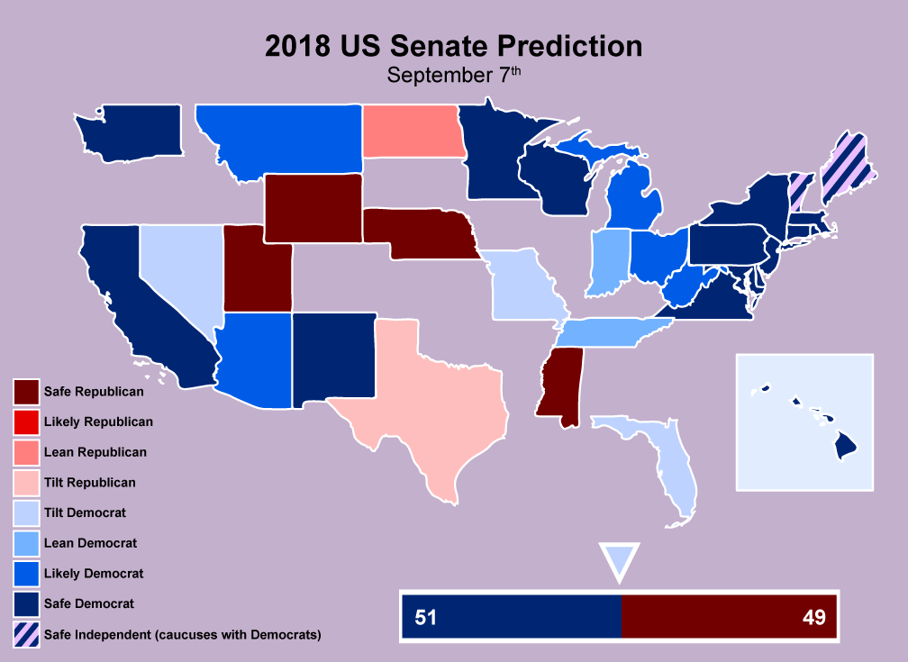
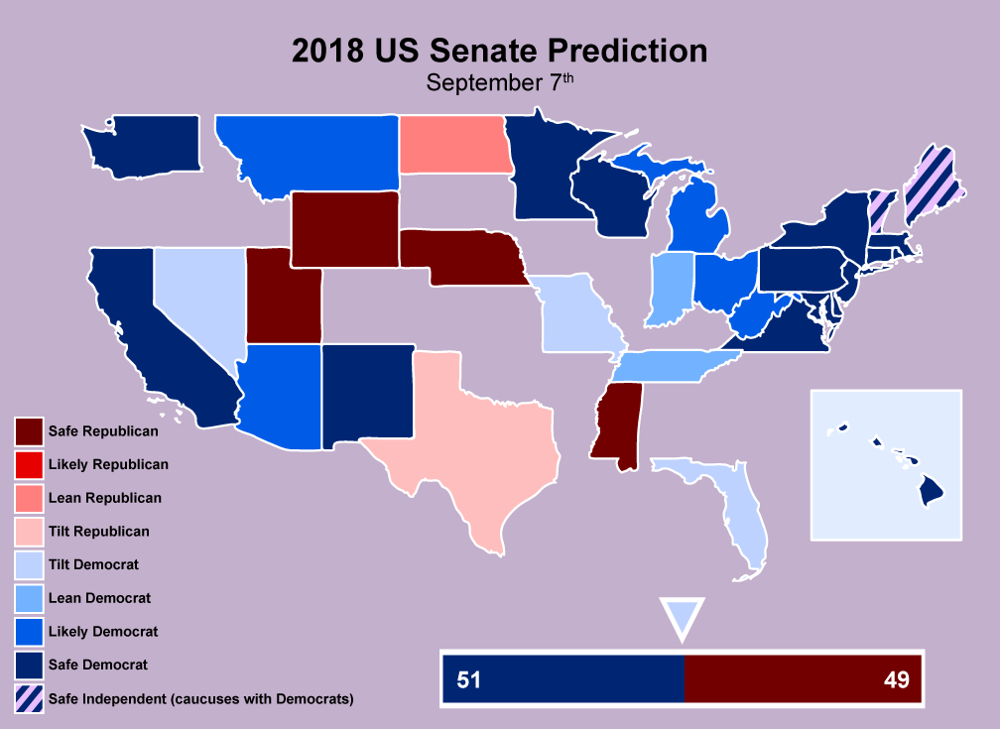

elijahmears
Lavender Maps
#LavenderMaps is a personal project which originated on Twitter but has its home here, on my webpage. Looked at one way, the project is just a collection of politically-themed maps I draw: electoral predictions, redistricting proposals, and even an odd bit of political humor. In that sense, this is no different than any other political maps page on the web.
What sets Lavender Maps apart is its true purpose, which is to demonstrate what political cartography could be with a better sense of aesthetics. Let's face it: most political maps are ugly, a hodgepodge of reds and blues, offensive to the eye, that can be difficult or impossible to read. My goal is to come at these maps as a graphic designer and set an expectation for ways of representing data that also look good. And anyway, isn't life better with a little lavender?
For a closer look at any of my maps, feel free to right click (or long press on your phone) and save them to zoom in at a higher resolution.